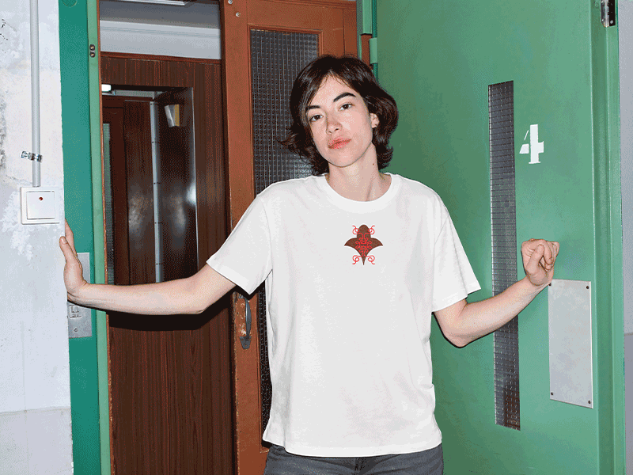
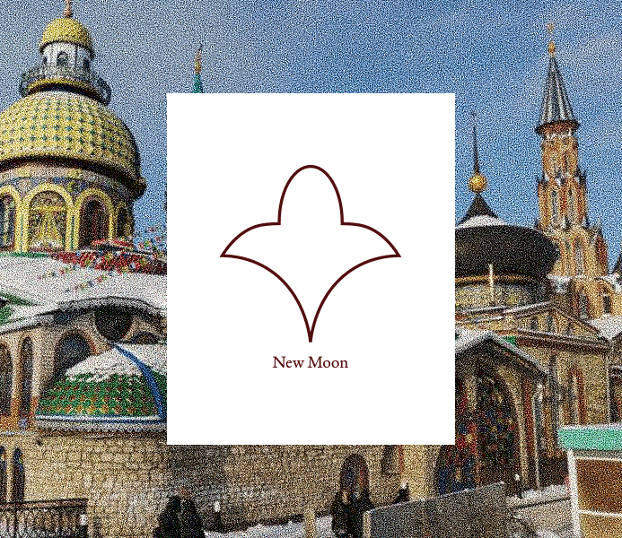

Lowan En Soi, 2026
Design
Building on Forrest Huu Ta's brand identity, I developed print assets for Lowan En Soi, a male lingerie brand. Working closely with Lowan, I expanded the visual identity through a custom logo and packaging design, creating a cohesive system across the brand’s physical touchpoints.
Stick It, 2026
Brand Identity, Web Design, Creative Coding
Stick It invites users to paste their personal notes from the Notes app. Reflecting on the human impulse to record thoughts while also exposing how quickly that meaning can dissolve when context is lost or removed.
Visit Website
Motiff AI, 2026
Layout Design, Creative Direction
As part of a larger publication, The Performative AI Thinker is featured as a spread, exploring the use of Motiff AI in UI/UX design.
→

-


Lale, 2026
Logo Design, Creative Coding
Using a real-time API to retrieve the current lunar phase in Tatarstan, I designed a dynamic logo system that evolves in sync with the moon’s cycle.
Visit Website
Takete, 2025
Typeface Design
Typespecimen designed for takete, a WIP sans/sans serif typeface made in Glyphs. Using Ana Mendieta's art & words.
→


Pipenco, 2025
Poster Design
AI assisted posters generated for Pipenco's SS26 campaign shoot. Creative Direction by Pipenco's Team.
W Magazine Article
Pipenco SS26
Virtual Twins, 2026
Data Visualisation, Creative Coding
Virtual Twins sorts wikipedia's expansive database on individuals “who were born and died on the same day.” The dataset has been sorted so that uncanny similarities between these individuals can be easily explored. By transforming raw information into an exploratory visual environment, the project makes patterns of coincidence and historical overlap more intuitive and engaging to understand.
Visit Website
→


Unsent & Unread, 2025
Book Design, Photography
A book dedicated to reintroducing the mailbox. Featuring a range of texts and visuals that explore the concept of communication in the digital age.
Digitising a Photographic Archive, 2025
Book Design
Иррахман Иррахым* is a serial publication collection that draws from a photographic archive, exploring body communication as a universal language. Each edition is distinguished by its own symbol, color palette, and photographic theme, moving fluidly through states of being: Jovial, Elated, Melancholic, Solace, Tranquil, and Earnest. Informed by the nuances of Tatar culture, the series embraces a dual typographic grid that gives equal visual weight to both Russian and English, allowing the two languages to coexist without hierarchy.